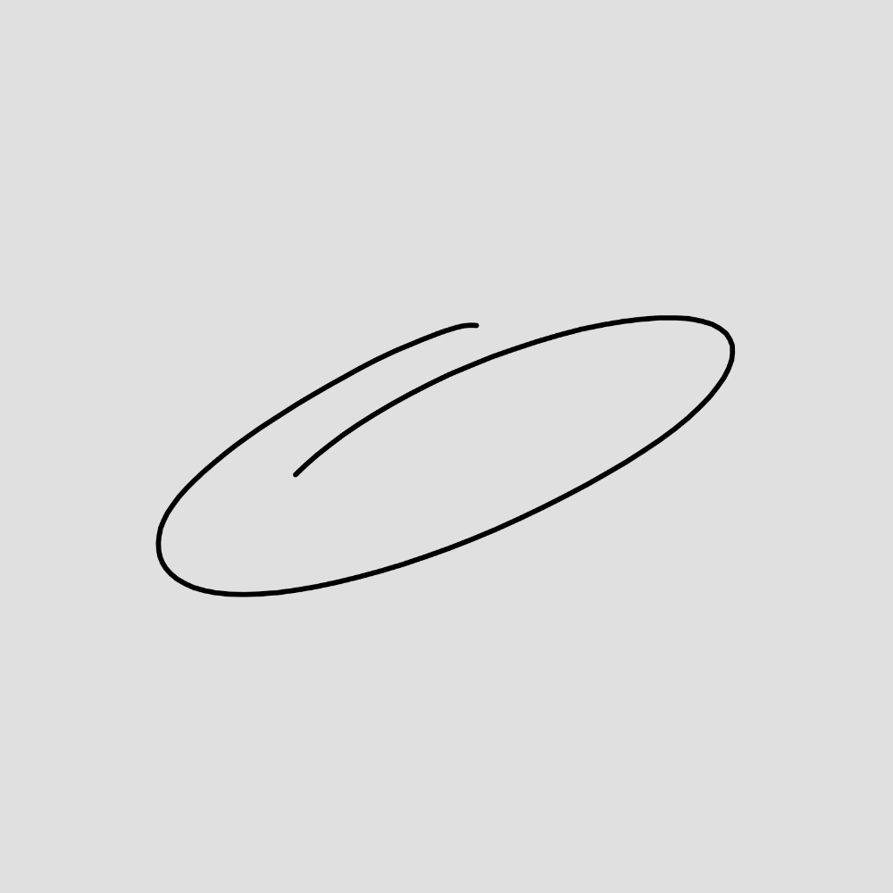

Musicah
Frankye è sempre stato un uomo di cultura, specialmente e solitamente musicale.
Tra rock, grunge, musica italiana e altro. il Dio cd è sempre nel suo cuore, come le donne che sanno di merluzzo (e come le tette).
Appena riesco, metto un calendario con gli eventi che nel mondo della muscia sono importanti, che il signor Frankye mi ha aiutato a fare, con tanta fatica e con tanta wikipedia.
Il signor Gemini mi ha aiutato a portarlo in formato json, era fatica riscrivere tutto...
La shtoria
